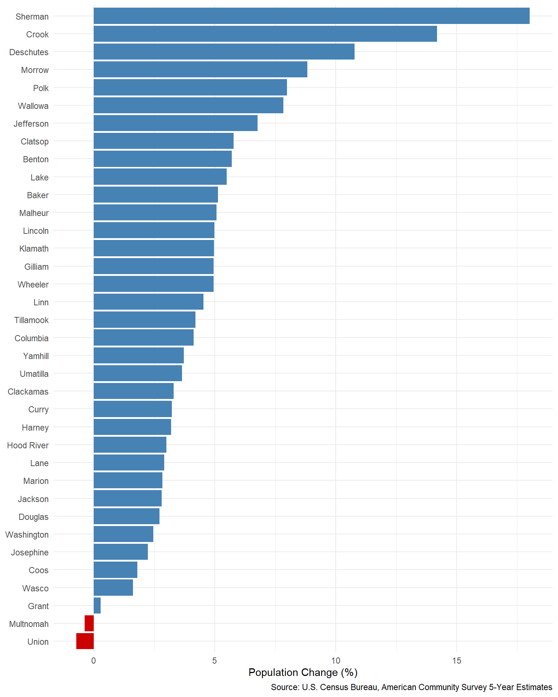

In general, an API (Application Programming Interface) is a way for two software systems to talk to each other. In the context of data, an API provides a structured way to request specific data from an organization’s servers and get it back in a predictable format.
Without an API, retrieving data from the Census Bureau or the Bureau of Labor Statistics typically means navigating a website, clicking through a data tool, selecting your options, and downloading a CSV or Excel file. This process is manual, time-consuming, and hard to reproduce. If the data updates next quarter, you have to do it all over again.
With an API, you write code that sends a request and receives data back directly into your R environment. This means your entire data retrieval process is scripted, reproducible, and can be re-run whenever the data is updated.
1.2 What does an API look like?
API providers publish documentation that describes what data is available, how to request it, and what format the response takes.
There’s a lot of jargon here that, for most of you, is probably pretty foreign: HTTP types, header, payload, JSON…
1.3 API “Wrapper” Packages
Obviously, if you aren’t already fluent in the language of internet protocols, this can present a pretty high barrier for using an API to access the data you want. This is where wrapper packages come in.
Thankfully, there is a kind and helpful community of developers out there who have written packages for R (and Python, etc.) that “wrap” all the complexity of constructing API requests, sending them, and parsing the responses in functions that look more familiar and are easier to use. You get tidy data frames back, ready for analysis with dplyr, ggplot2, and the rest of the tidyverse.
Today we will work with two wrapper packages:
tidycensus — for accessing U.S. Census Bureau data
blsAPI — for accessing Bureau of Labor Statistics data
If we have time, we’ll also look at one provided by IPUMS, which integrates microdata from surveys such as the Current Population Survey (CPS) and American Community Survey (ACS).
We’ll begin by ensuring that tidycensus is installed and loaded into our environment.
# install.packages('tidycensus')library(tidycensus)# Also make sure we have tidyverse if it isn't already loadedlibrary(tidyverse)
── Attaching core tidyverse packages ──────────────────────── tidyverse 2.0.0 ──
✔ dplyr 1.2.0 ✔ readr 2.1.6
✔ forcats 1.0.1 ✔ stringr 1.6.0
✔ ggplot2 4.0.1 ✔ tibble 3.3.1
✔ lubridate 1.9.4 ✔ tidyr 1.3.2
✔ purrr 1.2.1
── Conflicts ────────────────────────────────────────── tidyverse_conflicts() ──
✖ dplyr::filter() masks stats::filter()
✖ dplyr::lag() masks stats::lag()
ℹ Use the conflicted package (<http://conflicted.r-lib.org/>) to force all conflicts to become errors
Now, we need to save our API key somewhere that the package can easily access it without us needing to copy and paste it every time we make a request. Luckily, tidycensus makes this easy for us by providing a function that will automatically save it to our .Renviron file (this file stores many values that R or certain packages may need to regularly access behind the scenes).
# Replace "YOUR_KEY" with the key you received from Censuscensus_api_key("YOUR_KEY", install =TRUE)# Reload R environment readRenviron("~/.Renviron")# You can check it with:Sys.getenv("CENSUS_API_KEY")
Security Best Practice
Never hardcode your API key directly in a script that you share or commit to version control. Using census_api_key(install = TRUE) stores the key in your personal .Renviron file, keeping it out of your code.
2.3 Retrieving ACS Data for Oregon Counties
Let’s walk through a practical example: comparing population change across Oregon counties using the American Community Survey, specifically the 5-year estimates.
2.3.1 Step 1: Get Total Population by County
The get_acs() function retrieves data from the American Community Survey. We need to specify a few things: the geography level, the state, the survey year, and the variable(s) we want. ACS provides data for thousands of variables with unique codes. Thankfully, tidycensus provides a helpful function for browsing variables (for ACS and many other Census datasets): load_variables()
# Browse the available ACS 5-year variables for 2024# cache stores the results so we don't have to wait for them to load every timevars_2024 <-load_variables(2024, "acs5", cache =TRUE)View(vars_2024)
With some searching we can see that the variable code for total population is B01003_001.
With variable code in hand, let’s pull total population for Oregon counties from two time periods. We’ll start with the 5-year estimates from 2019.
# A tibble: 6 × 5
GEOID NAME variable estimate moe
<chr> <chr> <chr> <dbl> <dbl>
1 41001 Baker County, Oregon B01003_001 16019 NA
2 41003 Benton County, Oregon B01003_001 91107 NA
3 41005 Clackamas County, Oregon B01003_001 410463 NA
4 41007 Clatsop County, Oregon B01003_001 39102 NA
5 41009 Columbia County, Oregon B01003_001 51375 NA
6 41011 Coos County, Oregon B01003_001 63686 NA
Notice the structure: each row represents one county, with the estimate column containing the population value and moe containing the margin of error.
When pulling data for 2024 we will also set geometry = TRUE to download the county shapefiles provided through Census’ TIGER/Line program.
Simple feature collection with 6 features and 5 fields
Geometry type: MULTIPOLYGON
Dimension: XY
Bounding box: xmin: -124.5662 ymin: 41.99302 xmax: -119.8966 ymax: 46.29083
Geodetic CRS: NAD83
GEOID NAME variable estimate moe
1 41015 Curry County, Oregon B01003_001 23381 NA
2 41007 Clatsop County, Oregon B01003_001 41363 NA
3 41035 Klamath County, Oregon B01003_001 70247 NA
4 41033 Josephine County, Oregon B01003_001 88179 NA
5 41065 Wasco County, Oregon B01003_001 26552 NA
6 41017 Deschutes County, Oregon B01003_001 206334 NA
geometry
1 MULTIPOLYGON (((-124.3239 4...
2 MULTIPOLYGON (((-123.6647 4...
3 MULTIPOLYGON (((-122.29 42....
4 MULTIPOLYGON (((-124.042 42...
5 MULTIPOLYGON (((-121.8053 4...
6 MULTIPOLYGON (((-122.0019 4...
Notice that our view of the data frame includes a bunch of extra information related to the geometric/shapefile data. We will not use the shapefiles now, but they will be useful in a later mapping session. We’re going to do a bit of additional work before saving the dataset to use later.
2.3.2 Step 2: Calculate Population Growth
Let’s combine the two datasets and calculate the percentage change in population:
# Prepare each dataset: keep only GEOID, NAME, and estimate; rename estimateor_pop_2019 <- or_pop_2019 |>select(GEOID, NAME, estimate) |>rename(pop_2019 = estimate)or_pop_2024 <- or_pop_2024 |>select(GEOID, NAME, estimate) |>rename(pop_2024 = estimate)# Join and calculate percent changeor_pop_change <- or_pop_2024 |>left_join(or_pop_2019, by =c("GEOID", "NAME")) |>mutate(pop_change = pop_2024 - pop_2019,pct_change = (pop_change / pop_2019) *100 ) |># Clean up county names (remove ", Oregon" suffix)mutate(county =str_remove(NAME, " County, Oregon"))head(or_pop_change)
Now that we have a combined dataset, let’s save it to our Data folder using the .RDS format so we can use the shapefile data for mapping later. After saving the data, we’ll remove the geometry data from the object we are going to work with in this session.
saveRDS(or_pop_change, "Data/or_geo_data.RDS")# Convert the data to a normal tibble/data frame and remove the geometry fieldor_pop_change <- or_pop_change |>tibble() |>select(-geometry)
2.3.3 Step 3: Visualize Population Growth
Let’s create a bar chart showing population growth by county, sorted from highest to lowest growth:
or_pop_change |>ggplot(aes(x = pct_change, y =reorder(county, pct_change))) +geom_col(aes(fill = pct_change >0), show.legend =FALSE) +scale_fill_manual(values =c("TRUE"="steelblue", "FALSE"="red3")) +labs(x ="Population Change (%)",y =NULL,caption ="Source: U.S. Census Bureau, American Community Survey 5-Year Estimates" ) +theme_minimal()

Figure 1: Percentage Population Change in Oregon Counties (2019-2024)
Exercise 1: Explore a Different Variable
Using load_variables(), find the variable code for median household income (hint: look in table B19013). Then use get_acs() to retrieve median household income for Oregon counties from the 2024 5-year ACS. Create a horizontal bar chart showing the top 20 counties with the highest median income.
# Step 1: Search for the variablevars <-load_variables(2024, "acs5", cache =TRUE)# Filter for table B19013 to find median household income# vars |> filter(str_detect(name, "B19013"))# Step 2: Retrieve the dataor_income <-get_acs(geography ="county",variables ="B19013_001",state ="OR",year =2024) |>mutate(county =str_remove(NAME, " County, Oregon"))# Step 3: Create a bar chartor_income |>slice(n =20) |>ggplot(aes(x = estimate, y =reorder(county, estimate))) +geom_col(fill ="steelblue") +labs(title ="Median Household Income in Oregon Counties, 2024",x ="Median Income ($)",y =NULL,caption ="Source: U.S. Census Bureau, American Community Survey 5-Year Estimates" )
2.4 Other Available Datasets
While we focused on the ACS today, tidycensus provides access to several other Census Bureau datasets:
Decennial Census via get_decennial() — full-count data from the 2000, 2010, and 2020 Census
Population Estimates via get_estimates() — annual population estimates, including components of change (births, deaths, migration)
Migration Flows via get_flows() — county-to-county and metro-to-metro migration data from the ACS
Exercise 2: Try Another Dataset
Use get_decennial() to retrieve total population by county in Oregon from the 2020 Decennial Census. The variable for total population in the DHC summary file is P1_001N. How do the Decennial counts compare to the ACS estimates you retrieved earlier?
or_decennial_2020 <-get_decennial(geography ="county",variables ="______",state ="OR",year =2020,sumfile ="dhc")# Compare with the ACS data
3 Using blsAPI
3.1 Overview
The situation for BLS wrappers in R is a little more ambiguous, partly because the BLS API is less well-maintained than Census (the most recent update listed on their website is 2020). While tidycensus has become widely used, there are at least three different packages for accessing BLS data with various pros and cons.
blsAPI — Pros: straightforward implementation, used in official BLS API documentation. Cons: mostly requires knowing specific series IDs for the data you want, as well as some knowledge of how to parse the returned data; most recent version is not on official CRAN repository.
blscrapeR — Pros: a bit more user-friendly, compatible with the tidyverse style/format. Cons: unmaintained until just recently, mostly requires knowing specific series IDs for the data you want.
BLSloadR — Pros: avoids the rate limits set by the BLS API, includes more intuitive functions, and is being developed by LMI shops. Cons: largely downloads data in bulk, is still in the early stages of development.
Recognizing these limitations, we at least wanted to examine the blsAPI package in part because it includes a more ergonomic function for retrieving Local Area Unemployment Statistics (LAUS) data, laus_get_data(). It also contains a similar function for retrieving QCEW data.
While the core blsAPI() function requires that you know the series ID of the data you want to retrieve, laus_get_data doesn’t; you just provide location names, a measure, and a year range for the data you want.
Before jumping in, it’s also worth noting that the BLS API has two versions with different capabilities and different limits on how many API queries you make at one time, and how many data series you can return with a single query.
Because a compatible version of the package is only available via GitHub, we’ll have to take a slightly different approach to installing it.
# First ensure that devtools package is installed:install.packages("devtools")# Now use the install_github function from devtools to install the blsAPI package.# The package::function() syntax allows you to use a function without loading the entire package.devtools::install_github("mikeasilva/blsAPI")
3.2.1 Setting Up Your BLS API Key
Just like the Census API, you should store your BLS API key in your .Renviron file rather than hardcoding it in scripts:
# Open your .Renviron file for editing# The usethis package should be installed automatically when you install devtoolsusethis::edit_r_environ()# Add this line to the file, then save:# BLS_KEY=your_key_here# Reload R environment readRenviron("~/.Renviron")# Check that it is installedSys.getenv("BLS_KEY")
You can then retrieve your key in any script with Sys.getenv("BLS_KEY"). We will pass this key to blsAPI functions when making Version 2.0 requests.
library(blsAPI)
3.3 Retrieving LAUS Data for Oregon Counties
The Local Area Unemployment Statistics (LAUS) program produces monthly employment and unemployment estimates for states, counties, metros, and other geographies. Let’s use laus_get_data() to retrieve county-level data for Oregon.
3.3.1 Step 1: Identify Oregon County Names
The laus_get_data() function takes location names as its first argument. These names need to match what the BLS uses in its area codes dataset. For counties, the format is "County Name County, OR". You can explore the available area names using a dataset built into the blsAPI package:
# View a list of all available LAUS area names and their associated codesView(LAUS_AreaCodes)
Let’s define the Oregon counties we will work with. Oregon has 36 counties — we will use a selection here to keep API requests manageable, since each call counts against the daily query limit:
# Filter the LAUS area name to just those that contain "County, OR" and store as a vector objector_counties <- LAUS_AreaCodes |>select(area_text) |>filter(str_detect(area_text, "County, OR"))or_counties <- or_counties$area_text
API Rate Limits
Each laus_get_data() call sends requests to the BLS API, which has daily query limits. With Version 2.0 (registered), you get 500 queries per day and up to 50 series per query. For a large number of counties, the function may need to make multiple API calls behind the scenes. If you are working with many counties and multiple measures, be mindful of your daily limit.
3.3.2 Step 2: Download Unemployment Rate and Labor Force Data
The laus_get_data() function takes four arguments: a vector of location names, the measure you want, a start year, and an end year. You need to make a separate call for each measure, since the function returns data for one measure at a time.
# Retrieve unemployment rate data for 2019-2024or_ur <-laus_get_data(or_counties, "unemployment rate", 2019, 2024)head(or_ur)
Notice the structure: the function returns a data frame with columns for year, period, periodName, the measure value (named based on your request — here, Unemployment_Rate), and Location.
Now let’s pull labor force data:
# Retrieve labor force data for the same counties and yearsor_lf <-laus_get_data(or_counties, "labor force", 2019, 2024)head(or_lf)
3.3.3 Step 3: Calculate Average Annual Values
Let’s create a summary table with average annual unemployment rate and labor force for each county. First, we need to clean up and reshape the data:
# Clean unemployment rate data: ensure numeric types and create a date columnor_ur_clean <- or_ur |>mutate(ur =as.numeric(Unemployment_Rate),year =as.numeric(year),date =as.Date(paste0(year, "-",str_pad(str_remove(period, "M"), 2, pad ="0"), "-01")) )# Calculate average annual unemployment rate by countyor_ur_annual <- or_ur_clean |>filter(period !="M13") |>group_by(year, Location) |>summarize(avg_ur =round(mean(ur, na.rm =TRUE), 1), .groups ="drop")# Clean and summarize labor force data the same wayor_lf_clean <- or_lf |>mutate(lf =as.numeric(Labor_Force),year =as.numeric(year) )or_lf_annual <- or_lf_clean |>filter(period !="M13") |>group_by(year, Location) |>summarize(avg_lf =round(mean(lf, na.rm =TRUE), 0), .groups ="drop")# Combine into one summary tableor_laus_annual <- or_ur_annual |>left_join(or_lf_annual, by =c("year", "Location")) |>mutate(county =str_remove(Location, ", OR$"))head(or_laus_annual, 10)
Exercise 3: Explore the LAUS Data
Look at the or_laus_annual data frame. Which county in the dataset had the highest average unemployment rate in 2024? Which had the lowest? Use filter() and arrange() to find out.
# Highest unemployment rate in 2024or_laus_annual |>filter(year ==2024) |>arrange(desc(avg_ur))# Lowest unemployment rate in 2024or_laus_annual |>filter(year ==2024) |>arrange(______)
3.3.4 Step 4: Create a Line Chart for One County
Let’s visualize the monthly unemployment rate trend for a single county using the cleaned monthly data:
or_ur_clean |>filter( Location =="Multnomah County, OR", period !="M13" ) |>ggplot(aes(x = date, y = ur)) +geom_line(color ="steelblue", linewidth =0.8) +scale_y_continuous(labels = \(x) paste0(x, "%")) +labs(x =NULL,y ="Unemployment Rate",caption ="Source: Bureau of Labor Statistics, Local Area Unemployment Statistics" ) +theme_minimal(base_size =12)
3.3.5 Step 5: Faceted Line Chart for Multiple Counties
To compare several counties at once, we can use facet_wrap() in ggplot2 to create a small multiples chart:
# Select 6 counties for comparisonselected_counties <-c("Multnomah County, OR","Lane County, OR","Deschutes County, OR","Jackson County, OR","Marion County, OR","Coos County, OR")or_ur_clean |>filter( Location %in% selected_counties, period !="M13" ) |>mutate(county =str_remove(Location, ", OR$")) |>ggplot(aes(x = date, y = ur)) +geom_line(color ="steelblue", linewidth =0.7) +scale_y_continuous(labels = \(x) paste0(x, "%")) +facet_wrap(~ county, ncol =3) +labs(x =NULL,y ="Unemployment Rate",caption ="Source: Bureau of Labor Statistics, Local Area Unemployment Statistics" ) +theme_minimal(base_size =11) +theme(strip.text =element_text(face ="bold"),panel.spacing =unit(1, "lines") )
The faceted chart makes it easy to compare trends across counties while giving each one its own panel for clarity. Notice how all six counties show the dramatic spike during 2020 but with different magnitudes and recovery timelines.
Exercise 4: Your Own Faceted Chart
Create a faceted line chart showing the labor force (not unemployment rate) for a different set of 4–6 Oregon counties of your choice. You will need to work with the or_lf data frame instead of or_ur_clean.
# Step 1: Clean the labor force data (similar to what we did for unemployment rate)my_counties <-c(# Pick 4-6 counties from the or_counties vector)or_lf_monthly <- or_lf |>mutate(lf =as.numeric(______),year =as.numeric(year),date =as.Date(paste0(year, "-",str_pad(str_remove(period, "M"), 2, pad ="0"), "-01")) )# Step 2: Filter and plotor_lf_monthly |>filter( Location %in% my_counties, period !="M13" ) |>mutate(county =str_remove(Location, ", OR$")) |>ggplot(aes(x = date, y = lf)) +geom_line(color ="steelblue", linewidth =0.7) +facet_wrap(~ county, ncol =2, scales ="free_y") +labs(x =NULL,y ="Labor Force",caption ="Source: Bureau of Labor Statistics, Local Area Unemployment Statistics" ) +theme_minimal()
Bonus: Notice the scales = "free_y" argument in facet_wrap(). What does it do? Try removing it and see how the chart changes. When would you want fixed vs. free scales?
Exercise 5: Combine Census and BLS Data
This is a more advanced exercise that brings together both packages. Using the county-level population data you retrieved from tidycensus and the LAUS labor force data from blsAPI, calculate a labor force participation rate proxy for each Oregon county (average annual labor force divided by total population). Create a bar chart showing the results.
Hint: You will need to join the datasets on county name. Think about which year of Census data to pair with which year of LAUS data, and how to make the county name formats match between the two sources.
# Your code here
3.3.6 Using the Core blsAPI() Function
While laus_get_data() is convenient for LAUS data, the core blsAPI() function gives you access to any BLS series if you know the series ID. This is useful for programs that do not have a dedicated wrapper function.
Here is a quick example of requesting data with a known series ID:
# Request CPI-U (Consumer Price Index) data using API Version 2.0payload <-list("seriesid"=c("CUUR0000SA0"),"startyear"=2020,"endyear"=2024,"registrationkey"=Sys.getenv("BLS_KEY"))response <-blsAPI(payload, api_version =2, return_data_frame =TRUE)head(response)
Beyond LAUS, the BLS produces many other datasets you can access through the API:
CES (Current Employment Statistics) — employer-based estimates of employment, wages, and hours at state and metro levels
OEWS (Occupational Employment and Wage Statistics) — employment and wage estimates by occupation
JOLTS (Job Openings and Labor Turnover Survey) — data on job openings, hires, and separations
CPS (Current Population Survey) — national household survey data with demographic detail
QCEW (Quarterly Census of Employment and Wages) — comprehensive employer-reported data by industry and area. The blsAPI package includes a dedicated blsQCEW() function for this dataset.
Each of these can be accessed through blsAPI() using the appropriate series IDs, or through specialized wrapper functions where they exist.
4 Wrapping Up
In this session we covered how to use R packages to access two major federal data sources directly from your scripts. The key takeaways are:
APIs let you retrieve data programmatically, making your workflow reproducible and scriptable. Wrapper packages like tidycensus and blsAPI hide the complexity of raw API calls and return ready-to-use data.
tidycensus gives you access to ACS, Decennial Census, Population Estimates, and more, with built-in support for spatial geometries.
blsAPI gives you access to LAUS and other BLS programs through the BLS API. The laus_get_data() convenience function lets you request LAUS data by location name and measure without constructing series IDs manually.
Both packages return data that integrates directly with the tidyverse and ggplot2 workflows you already know.